家事の中でできる 整え直し
掃除や片付けの流れの中で、使いやすく
なるよう少し整えます。たとえば、置き
場所を見直す、よく使う物を出し入れし
やすくする、散らかりやすい場所を簡単
に整える、といった内容です。
暮らしのマモリテは、掃除・洗濯・片付けを中心に、買い物や料理まで、今の暮らしに合わせて継続して支える家事サポートです。毎回すべてを同じ内容に固定するだけでなく、その日の状況を見ながら、優先順位を調整して進めることもできます。
掃除・洗濯・片付けなど、暮らしに欠かせない家事を継続して
支えます。忙しい時や余裕がない時も、毎日の流れが止まらな
いよう、必要なことを見ながら進めます。
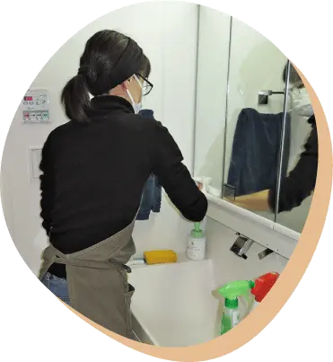
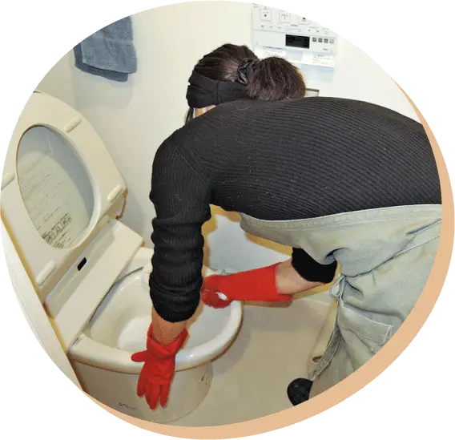
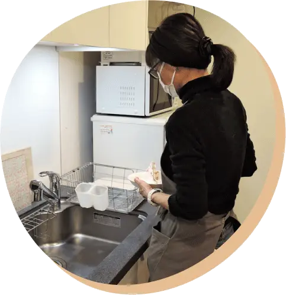
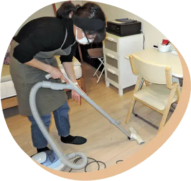
買い物や料理、作り置きなど、食まわりの家事もサポートして
います。掃除や洗濯などと組み合わせてご利用いただくことも
できます。
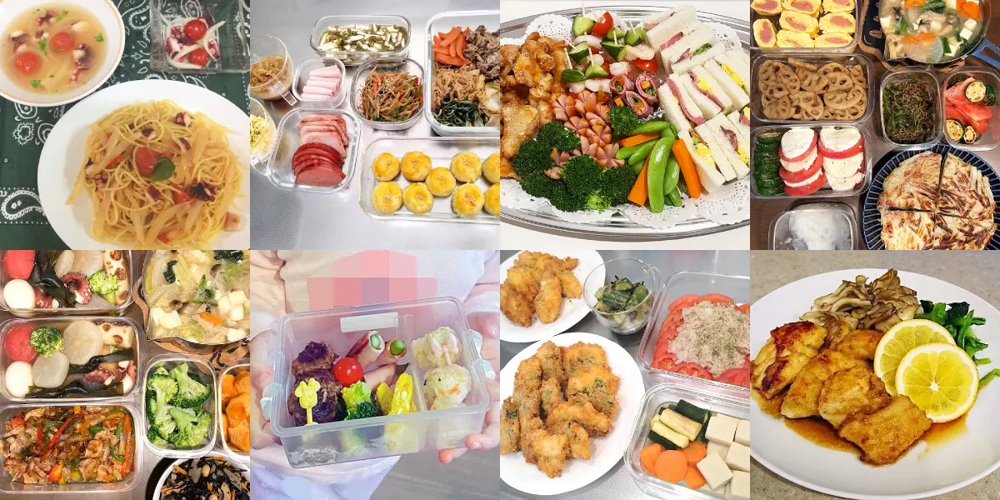
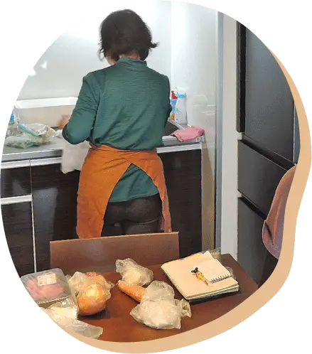
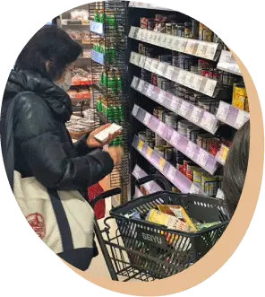
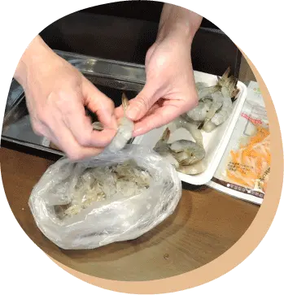
使いづらい・散らかりやすい場所を見直したい時もご相談いた
だけます。ただし、整え直しには２つの段階があります。
掃除や片付けの流れの中で、使いやすく
なるよう少し整えます。たとえば、置き
場所を見直す、よく使う物を出し入れし
やすくする、散らかりやすい場所を簡単
に整える、といった内容です。
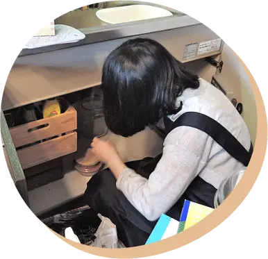
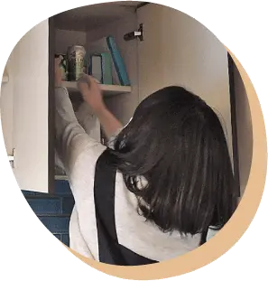
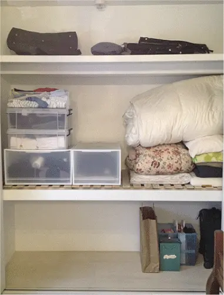
after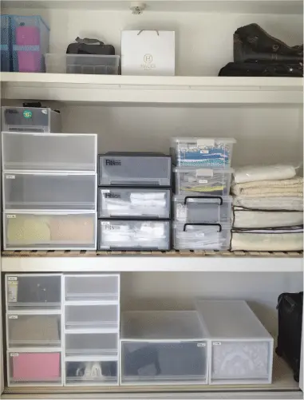
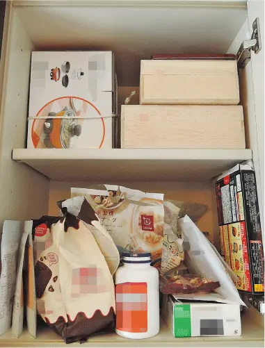
after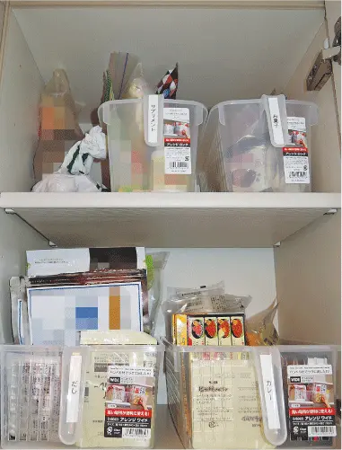
収納の設計や提案、収納用品の選定、仕
分け作業を伴う場合は、別途ご相談にな
ります。対応できるスタッフや内容が限
られるため、個別にご案内します。
Case 1
基本は日常家事を頼みながら、その時の状況に応じて食まわり
も組み合わせる使い方です。
Case 2
一度に大きく変えるのではなく、日常の流れの中で無理なく整
えていく使い方です。
「掃除と料理を一緒に頼めるかな」「片付けのついでに、少し整えてもらえ
るかな」「どこまでお願いできるのか知りたい」という段階でも構いません。
暮らしの状況やご希望を伺いながら、無理のない使い方をご案内します。
対応エリア
東京都内を中心に承っています。近郊エリアも、ご利用内容や頻度によっては対応
できる場合があります。
返信について
ご利用内容・ご希望エリア・頻度などを確認のうえ、順次ご返信します。